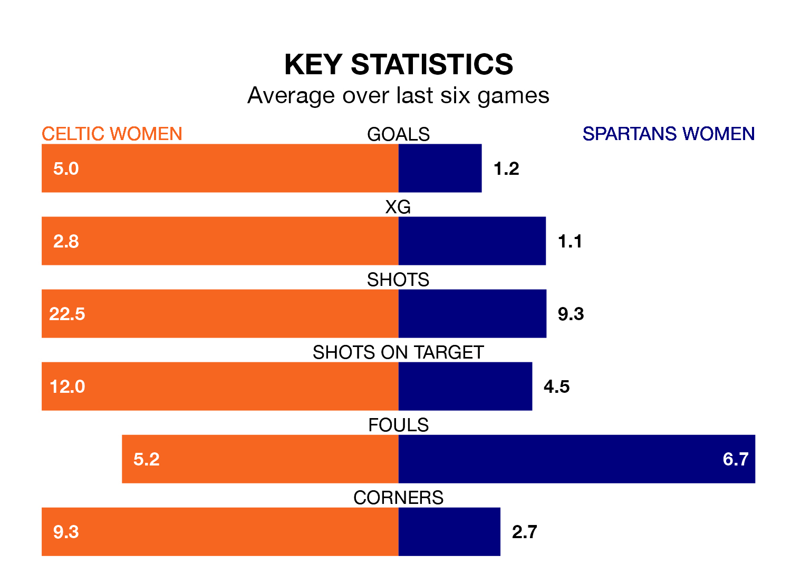

Mid-season relegation candidates Spartans Women face a challenge away against high-flying Celtic Women at the Excelsior Stadium on Sunday.
Spartans Women are 10th in the SWPL 1 table, and have picked up two wins and two draws in their 14 games to date.
Celtic, meanwhile, are second in the standings with 39 points, having won 13 and drawn none, and are one point behind table-toppers Rangers W.
Celtic are in fantastic form in SWPL 1, with five wins and one loss from their last six games.
With no wins and six losses over that period, Spartans' form is much worse – they have taken no points from 18, compared to the hosts' 15.
With 73 goals in 14 games so far this season, Celtic are the league's highest scorers with 5.2 goals per game. And they are conceding fewer than average, letting in eight goals at a rate of 0.6 per game.
The Spartans, meanwhile, are below average scorers, with 1.1 goals per game, compared to a league average of 2.2. They have conceded 2.6 goals per game.
In Kelsey Daugherty, Celtic can rely on one of the league's safest pair of hands. She has kept six clean sheets in her 10 appearances this season, and no 'keeper has prevented the opposition scoring more often in SWPL 1.
In the away team's net, Alicia Yates has two clean sheets in eight games. She has conceded a goal every 42 minutes, three times as often as the 129 minutes between goals for Daugherty.
Over the last two years, Celtic and Spartans have played each other on six occasions. Celtic won five of them and they drew once.
On average, Celtic scored 3.0 goals and the Spartans 0.3 in those matches.
Their last meeting was on August 23, when Celtic won 5-0 away.
Celtic's last match was on November 26, a 13-0 win against Aberdeen, with Amy Gallagher (three), Murphy Agnew (three), Natalie Ross (two), Caitlin Hayes, Chloe Norma Craig, Clare Goldie, Colette Cavanagh and Paula Partido Durán getting the goals for Celtic.
Spartans lost 4-1 against Hibernian Women last time out, also on November 26, with Caley Gibb on the scoresheet.
